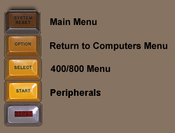
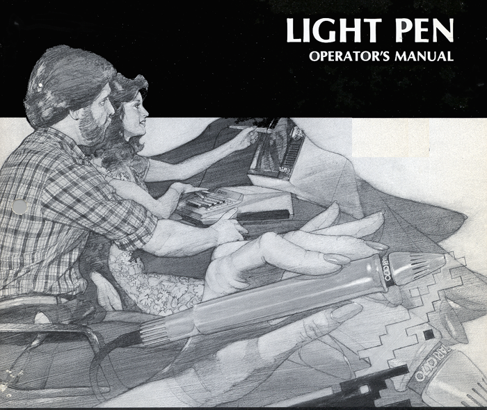

| Content to be added.
Note: On March 13, 2018, former Atari employee Cecile Wood-Leguillon Commented the the Atari Museum Facebook page that it is her hand is holding the ATARI CX70 Light Pen in the artwork for the Box Cover and Manual Cover: "That's my hand ... I remember sitting for the artwork just like it was yesterday."
.
|
Work in Progress, updated 4/17/2019